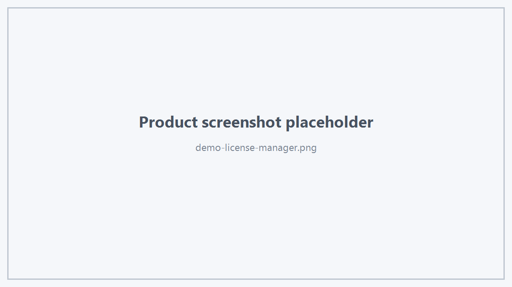

载入中...
搜索中...
未找到
Hts Viewer Demo
Hts Viewer Demo 是 Hts Viewer SDK 的完整产品演示程序。
Demo 的定位不是 API 教学 Sample，而是让用户在正式集成 SDK 之前快速完成：
- Viewer 产品体验；
- 运行环境验证；
- 显示效果评估；
- 选择与交互体验；
- 网格与材质能力验证；
- 授权管理。

Hts Viewer Demo 主界面
1. Demo 与 Samples 的区别
| 项目 | Viewer Demo | Samples |
|---|---|---|
| 目标 | 产品体验与综合验证 | 学习单项 API |
| UI | 完整应用界面 | 尽量简单 |
| 授权 | 推荐的授权管理入口 | 演示授权 API 调用 |
| 功能范围 | 多功能集中展示 | 每个 Sample 关注一个主题 |
| SDK 使用 | 正式公开 SDK | 正式公开 SDK |
2. 推荐体验流程
首次运行 Demo 后建议依次体验：
- 加载演示模型；
- Engineering Default 显示；
- CAD Edge 与 Triangle Wireframe；
- Object / Body / Face / Edge / Vertex 选择；
- Hide / Isolate / Show All；
- PBR 材质与透明度；
- 网格显示；
- Boundary / Excitation 等工程标注；
- DisplayStats；
- 授权管理。
3. 授权管理
推荐通过 Demo 的授权管理页面完成：
- 查看当前 Viewer 授权状态；
- 获取机器码；
- 复制或导出机器码；
- 导入授权文件；
- 确认授权是否生效。

Viewer 授权管理
配图文件：documentation/source/images/demo-license-manager.png
4. Demo 的 CAD 文件导入
Demo 可能提供 STEP、IGES 或其他 CAD 文件导入能力，用于方便用户体验 Viewer。
需要明确：
CAD 文件导入属于 Demo 应用能力，不代表 Hts Viewer SDK 依赖某一种 CAD Kernel。
Hts Viewer SDK 的公开数据输入仍然是 HtsDisplayMeshData、HtsMeshDisplayData 等公开 DTO。
实际业务系统可以使用自己的 CAD Kernel、Mesh 系统或数据转换模块构造 Viewer 数据。
5. 开发者下一步
完成 Demo 体验后，建议从：
samples/viewer_basic
开始学习 SDK 接入。